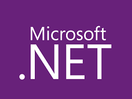
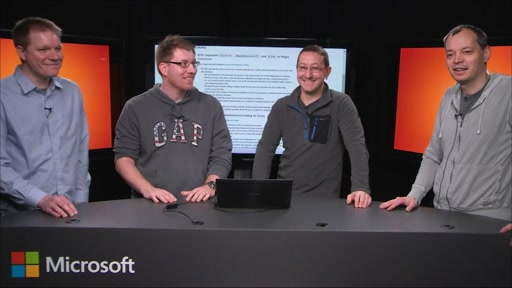
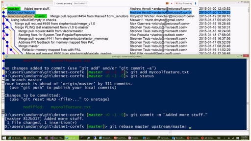
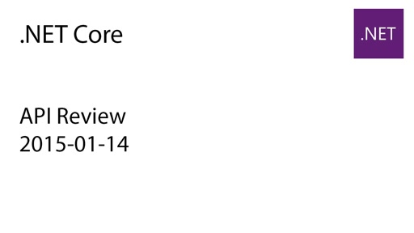
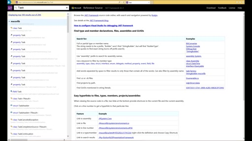
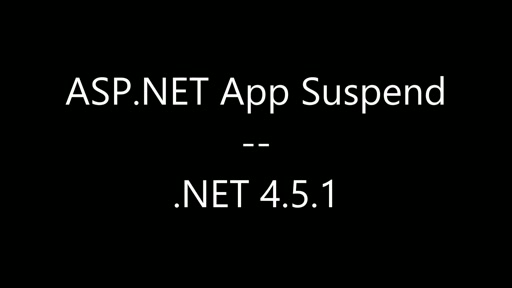

This series includes both instructive and demonstrative videos for the .NET developer. They cover all of the .NET platforms (ex: Windows Azure).Note: new content will show up here instead.
Introduction to API Reviews[MP4] [0:58:28] [2015/01/29]In this video, Dan Fernandez talks to Eric St. John, Immo Landwerth, David Kean, and Krzysztof Cwalina from the .NET team about API reviews. How do we conduct API reviews?How does this work in an open…
Git Training for the .NET Team[MP4] [1:11:55] [2015/01/27]This is a recording of the git training Andrew Arnott did for the .NET team. We bet you'll find this helpful, too! Here are some additional resources: Pro Git. Excellent (and free!) online book on Git…
.NET Core API Review 2015-01-14[MP4] [1:54:03] [2015/01/16]Video recording of the January, 14th 2015 GitHub API Review of .NET Core Pull Requests. [Video] GitHub Issue: #316: Implement IList<T>, IReadOnlyList<T>, and IList on Regex…
Immo Landwerth and David Kean - Open sourcing the .NET Framework[MP4] [0:46:48] [2014/12/06]With the recent announcement that the .NET Core is open source, Dan sits down with Immo Landwerth and David Kean to discuss what open sourcing means, how .NET Core will support both Windows and Linux,…
How to browse the .NET Reference Source[MP4] [0:02:24] [2014/02/24]In this short video, we'll show off the key features of the new browsing experience for the .NET Reference Source, which you can preview on http://referencesource-beta.microsoft.com: Go to definition…
Introducing ASP.NET App Suspend[MP4] [0:02:19] [2014/02/24]ASP.NET App Suspend is a new feature in the .NET Framework 4.5.1 that makes ASP.NET sites much more responsive and enables you to host more sites on a single server. It is very well suited for…